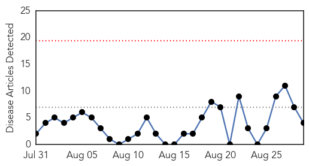
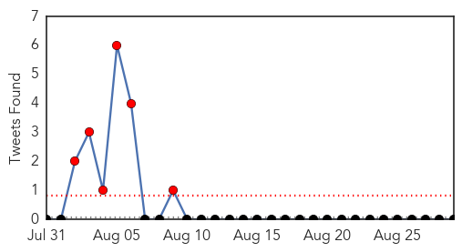
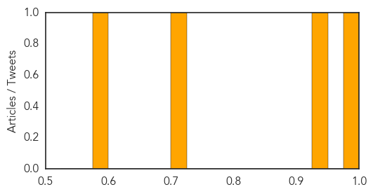

Dengue Fever
30-Day Web Trend
0 alerts, 0 warnings

30-Day Twitter Trend
7 alerts, 0 warnings

Article Locations

Article Confidences
Top Articles:
Top Tweets:
-
No tweets found for Aug 29, 2014
West Nile Virus
30-Day Web Trend
0 alerts, 0 warnings

30-Day Twitter Trend
0 alerts, 0 warnings

Article Locations

Article Confidences

Top Articles:
- 0.998
- Nine new West Nile Virus cases this week for a total of 61 so far
- 0.993
- West Nile virus deaths reported in LA, Orange counties
- 0.900
- West Nile Virus Likely Widespread In Vermont
- 0.874
- Oklahoma reports four cases of West Nile virus
- 0.860
- West Nile Virus found in Michigan horse, turkeys
- 0.852
- West Nile Virus found in Michigan horse, turkeys
- 0.849
- DHH: 9 new cases of West Nile virus
- 0.809
- West Nile Virus Found in Vt. Mosquitoes
- 0.784
- West Nile season will last until frost
Top Tweets:
-
No tweets found for Aug 29, 2014